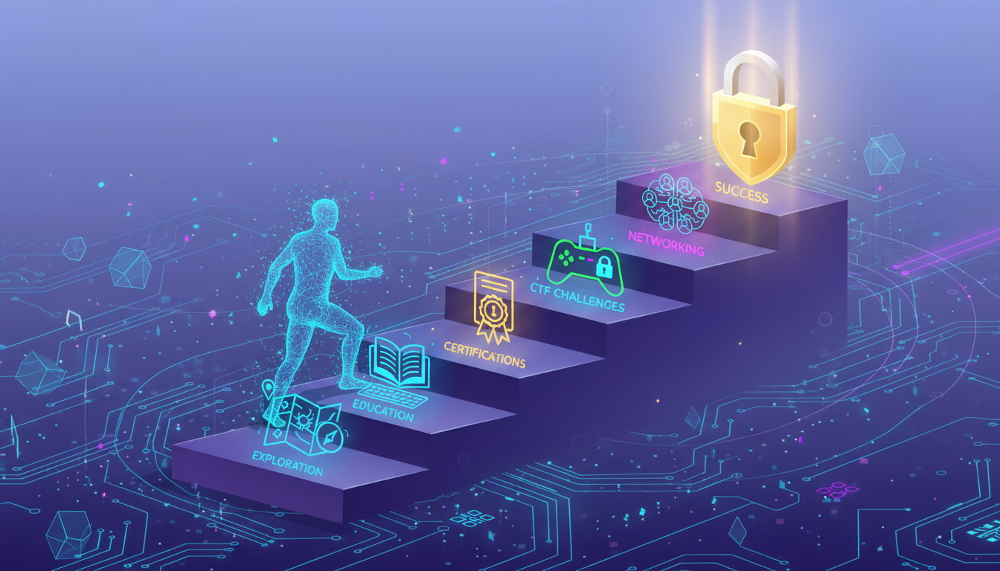

La ciberseguridad es el conjunto de técnicas, herramientas y normas que sirven para proteger computadoras, celulares, redes, aplicaciones y datos contra ataques digitales, robos o daños.
Explorar MásSu objetivo principal es mantener la información a salvo mediante la famosa Tríada CIA.
Garantizar que la información sea accesible únicamente para las personas debidamente autorizadas (que solo la vean personas autorizadas).
Mantener los datos exactos y libres de modificaciones no autorizadas (que no sea modificada sin permiso).
Asegurar que los usuarios autorizados tengan acceso a la información siempre que lo requieran (que pueda usarse cuando se necesite).
Diferentes entornos que requieren protección especializada.
Protege redes de internet y Wi-Fi contra accesos no autorizados.
Ejemplos: Firewalls, VPN, Antivirus de red.
Protege computadoras y laptops.
Incluye: Antivirus, Contraseñas seguras, Actualizaciones del sistema.
Protege teléfonos y tablets de riesgos como apps falsas, robo de información o hackeo de cuentas.
Consejos: Descargar apps oficiales, usar bloqueo facial o huella.
Protege archivos almacenados en internet.
Ejemplos: Google Drive, OneDrive, Dropbox.
El primer paso para defenderse es conocer los riesgos.
Programas dañinos y software malicioso que infectan dispositivos para robar o dañar información.
Mensajes falsos para robar contraseñas o dinero (Ej: Un correo que pide iniciar sesión urgentemente).
Secuestra archivos bloqueándolos y pide dinero para recuperarlos.
Espía la actividad del usuario o utiliza sus datos personales sin su permiso.
Robo de cuentas, fraudes bancarios, ciberacoso, suplantación de identidad y extorsión digital.

Tus aliados esenciales para mantener los entornos digitales seguros.
Detecta y elimina amenazas. Ejemplos: Microsoft Defender, Avast, Kaspersky.
Bloquea conexiones peligrosas entrantes o salientes de internet.
Protege y cifra tu privacidad al navegar de forma anónima en la red.
Aumenta la seguridad pidiendo un código adicional al iniciar sesión.
Conceptos clave y ejemplos de ataques que cambiaron el mundo digital.
Es una profesión con altísima demanda actual, destacando roles como:
Puedes empezar adquiriendo bases sólidas en: Uso seguro de internet, Redes, Programación básica, Linux y Ética digital.
Plataformas útiles: Cisco Networking Academy, Khan Academy y Coursera.
Acciones simples recomendadas por expertos que reducen el riesgo drásticamente.
Usa claves complexes y difíciles. ¡Evita usar datos obvios!
No compartas datos confidenciales con desconocidos en la red.
Mantén tus aplicaciones, celulares y sistemas siempre al día.
Usa antivirus, tiendas oficiales y activa el doble factor (MFA).
No abras enlaces extraños y evita redes Wi-Fi públicas abiertas.
Cada día ocurren millones de ataques digitales dirigidos a entornos web, financieros y sociales.